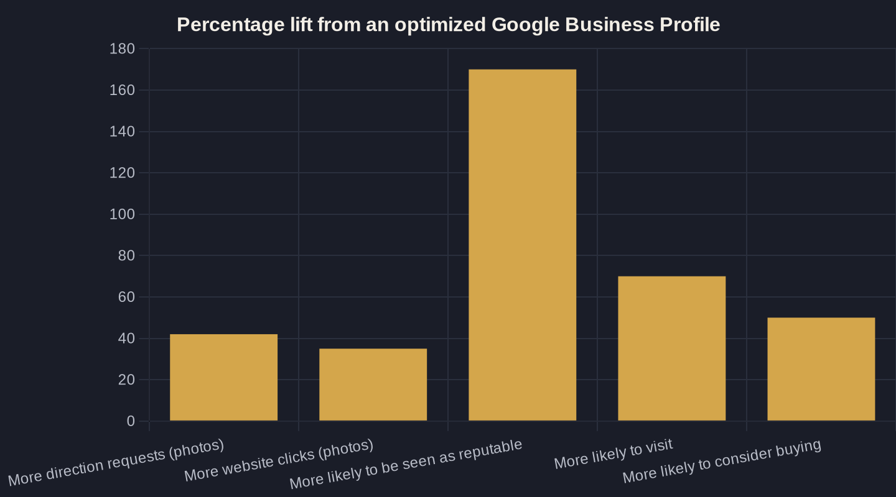

Google Business Profile Optimization: The Local Ranking Checklist
Your profile is the most valuable real estate you own online. Here is the owner-to-owner checklist to make it rank, convert, and pay you back.
Key takeaways
- Business Profile signals are 32% of Local Pack rankings and reviews another 20% — together about half of what decides the top-3 map results.
- Completeness pays: Google says a complete profile is 2.7x more likely to be seen as reputable and drives 70% more visits.
- Photos drive 42% more direction requests and 35% more website clicks — add them by category and refresh them quarterly.
- The call button is a revenue event: 37% of inbound calls convert, so track the phone number or you are flying blind.
- Run the profile through Owner's Math — views to calls to booked jobs to revenue — and it becomes your cheapest growth lever.
Why Google Business Profile Optimization Is the Highest-Leverage Local Move
Your Google Business Profile is the most valuable piece of real estate you own online, and most owners treat it like an afterthought. It is the listing that shows up in the map pack, feeds the call button, and decides whether a stranger searching "plumber near me" ever sees your name. Google Business Profile optimization is the work of filling, tuning, and maintaining that listing so it both ranks and converts.
The leverage is not theoretical. Research finds that Business Profile signals account for 32% of what decides Local Pack rankings, the single largest category, with reviews adding another 20%. Get those two right and you are influencing roughly half of what puts you in the top three map results. This checklist is the part of local SEO for service businesses you can actually finish this week.
Claim and Complete Every Field
Start with completeness, because Google rewards it and so do buyers. Per Google's own data, customers are 2.7x more likely to consider a business reputable when its profile is complete, 70% more likely to visit, and 50% more likely to consider buying. An empty profile is a closed door, and Google Business Profile optimization starts by opening it.
- Verified business name, exactly as it appears on your signage. No keyword stuffing.
- A primary category plus secondary categories for everything else you do.
- Full address, or a defined service area if you travel to customers.
- A local phone number you can track to a real lead.
- Hours, including holiday hours, so you never show "open" when you are closed.
- Website link plus a booking or appointment link.
- Services with descriptions and prices wherever you can publish them.
- A 750-character business description and the right attributes (veteran-owned, wheelchair accessible, and so on).
Treat this as setup you maintain, not a project you finish once and forget. A field left blank is a question a buyer answers by clicking your competitor.
Get the Category and Services Right
Your primary category is the strongest relevance signal on the whole profile. Choose the most specific category that matches your core money service, then layer secondary categories on top for the rest of what you offer. An "Emergency plumber" who picks "Plumber" as primary is leaving intent on the table; specificity is how Google matches you to high-intent searches.
Then fill the Services section underneath each category with real names, plain descriptions, and prices where your market allows it. This is the same job-by-job thinking that drives how you rank in the Google Maps 3-pack, and it doubles as pre-qualification: a customer who reads "drain camera inspection, $189" and still calls is a better lead than one who calls blind.
Photos Are a Conversion Lever, Not Decoration
Photos do measurable work, not cosmetic work. Google's own data shows profiles with photos receive 42% more requests for driving directions and 35% more website clicks than profiles without them. The same study found the average small-business profile already pulls roughly 1,009 searches a month, so a thin photo set is a lot of impressions wasted.
Cover the set deliberately: exterior shots so people recognize you on arrival, interior shots that show the space is real, your team and trucks, and genuine before-and-after work photos. Refresh them every quarter. A profile with one blurry logo tells a buyer you are either new or not paying attention, and neither earns the click.
| Profile element | Measured impact | Source |
|---|---|---|
| Photos added | 42% more driving-direction requests, 35% more website clicks | Google / BrightLocal |
| Complete profile | 2.7x more likely to be seen as reputable; 70% more likely to visit | |
| Reviews on the profile | 20% of Local Pack ranking factors; 89% say reviews affect their choice | BrightLocal |
| GBP signals overall | 32% of Local Pack ranking factors (largest single category) | BrightLocal |
| Phone call from the profile | 37% of inbound calls convert on the call | Invoca |

Reviews Are the Off-Page Signal That Gates the Booked Job
If completeness is the floor, reviews are the ceiling. Google is where the decision happens: 81% of consumers used Google to read local-business reviews in 2024, and 89% say a business's reviews would affect their decision to use it. Reviews are not a vanity metric; they are a direct gate on whether you get the booked job.
They also pull double duty, because reviews are 20% of the ranking equation. So the work that earns trust also lifts visibility. Build a simple, compliant ask into every completed job, the way getting more Google reviews without breaking the rules lays out, and respond to every review you receive, especially the hard ones covered in how to respond to reviews. Both habits compound month over month.
Keep It Active: Posts, Q&A, and Updates
A profile that has not moved in six months signals neglect to Google and to buyers. Activity is free, and it keeps your listing fresh in a way static fields cannot.
Publish a weekly Post about a service, an offer, or a recent job. Seed your own Q&A with the five questions customers actually ask and answer them plainly. Update hours before every holiday. Add new services as you launch them. None of this takes more than fifteen minutes a week, but it tells the algorithm the business is live and tells the customer the lights are on.
The Owner's Math: Track the Profile to Revenue
None of this matters if you cannot trace it to booked work. The call button on your profile is a high-intent event: Invoca's analysis of more than 60 million calls across nine industries found 37% of inbound phone leads convert on the call. That makes a tracked phone number non-negotiable. If you do not measure the calls, you are guessing.
Run the chain the way Owner's Math does: profile views to calls and direction requests, calls to booked jobs, booked jobs to revenue, revenue back to what visibility is worth. When you can put a dollar figure on a complete, photo-rich, well-reviewed profile, this stops being a chore and starts being the cheapest growth lever you have. If you want me to run your profile against this checklist and put real numbers to it, that is exactly what a working session covers. Join the newsletter below or book a call and we will trace your profile to revenue together.
Sources
- BrightLocal — Google's Local Algorithm and Local Ranking Factors (2026)
- Search Endurance — Google Business Profile Statistics (figures attributed to Google) (2026)
- BrightLocal — Google My Business Insights Study (citing Google) (2024)
- BrightLocal — Local Consumer Review Survey 2024 (2024)
- Invoca — Call Conversion Industry Benchmarks Report 2025 (2025)
Want this run on your numbers?
Book a call and we will run the Owner's Math on your business — clear numbers, a straight plan, no pitch. Or read the free Playbook first.